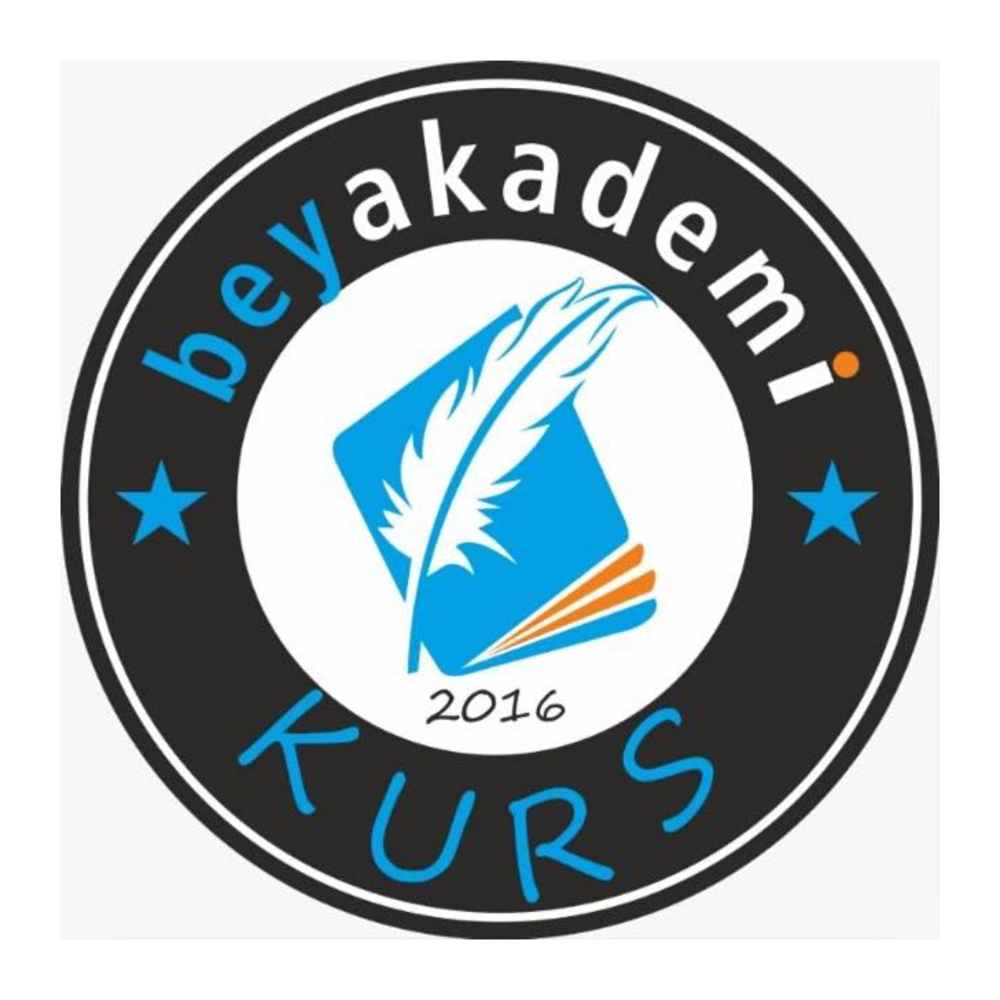

Beyakademi V8.3 PRO
Gerçek veri + konu yüzde + analizli veli karnesi
Giriş Yap
Öğrenci Demo
Veli Demo
Danışman Demo
Yönetici Demo
254 öğrenci • 23 deneme • Konu yüzdeleri branş performansından türetilmiştir.
Beyakademi V8.3 PRO
Hoş geldiniz
Rol
Çıkış
Öğrenci
Danışman
Bilgi
Gerçek veri entegre
Genel
Öğrenci
Konu Yüzde
Kritik 3 Konu
Veli Karnesi
Danışman
Yönetici
Genel Panel
-
-
-
Hedef
REAL DATA
0
Gün
0
Saat
0
Dakika
0
Saniye
Günün Motivasyonu
Düzenli tekrar yapan öne geçer.
Hızlı Özet
Son net
0
Ortalama net
0
Güçlü ders
-
Zayıf ders
-
Yorum
-
Net Gelişim Grafiği
Kurum Özeti
0
Öğrenci
0
Genel Ortalama
0
Sonuç
0
En Yüksek Ort.
Günlük Plan
Önerilen çalışma
-
Deneme Geçmişi
Deneme
Toplam
Puan
Kurum
Genel
Konu Yüzde Analizi
En Kritik 3 Konu
Analizli Veli Karnesi
-
Yazdır / PDF al
Genel Durum
Ortalama Net
-
Son Net
-
Hedef Net
-
Güçlü Yönler
Destek Gereken Alanlar
Veliye Özel Yorum
En Kritik 3 Konu
Danışman Özeti
Danışman
-
Öğrenci sayısı
0
En yüksek ortalama
-
Riskli öğrenci
-
Danışman Öğrenci Listesi
Öğrenci
Sınıf
Ortalama
Son Net
Zayıf Ders
Yönetici Özeti
Toplam öğrenci
0
Genel ortalama
0
İlk 3 öğrenci
-
Kurum Sıralaması
#
Öğrenci
Danışman
Ortalama
Son Net
Sınıf